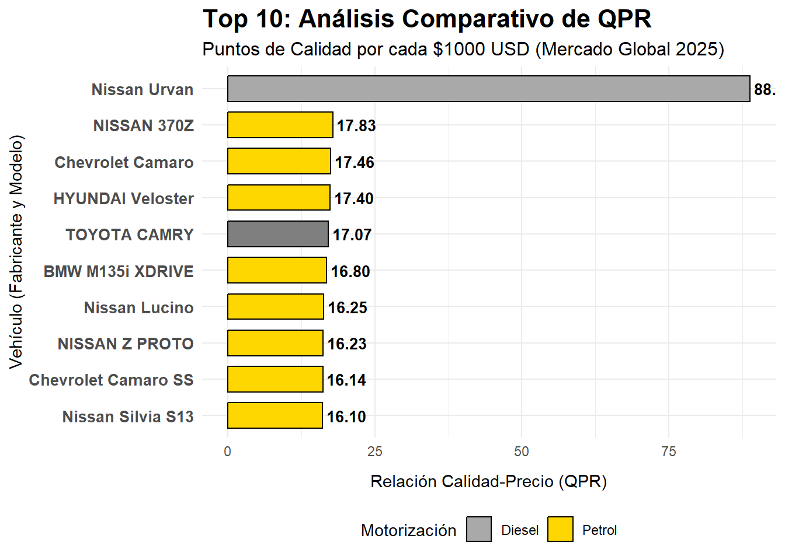
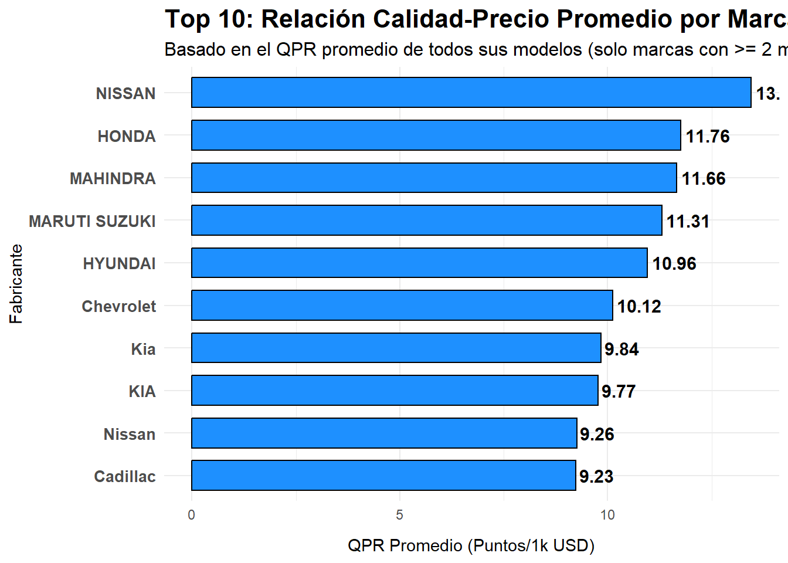
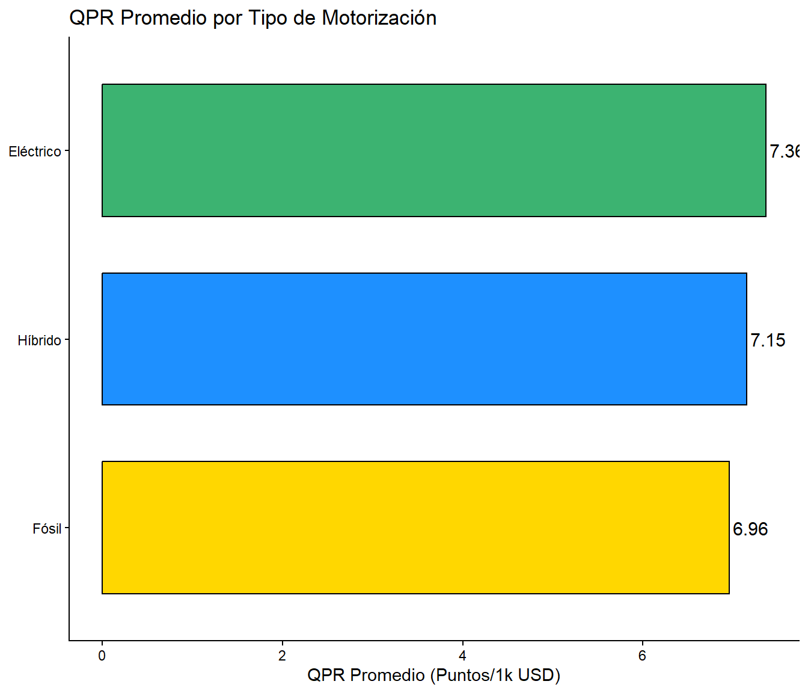

En el mercado automotriz de hoy, tomar una buena decisión de compra no se trata solo de ver qué coche tiene el precio más bajo, ni tampoco el que tiene más caballos. Se trata de encontrar el punto perfecto entre el precio y lo que el coche realmente ofrece. ¿Estamos pagando por el valor real o solo por el nombre de la marca?
Este estudio se centra en responder esa pregunta usando una métrica clave: la Relación Calidad-Precio (QPR). El QPR no es más que una forma de medir, de manera justa y objetiva, cuántos puntos de rendimiento técnico (potencia, velocidad, eficiencia, etc.) recibes por cada unidad de dinero invertida.
¿Qué vamos a ver en este análisis? Nuestro objetivo principal es ir más allá de los números obvios y descubrir dónde está el verdadero valor. Para eso, el informe está estructurado en tres partes clave:
Top 10 de Modelos: Identificamos cuáles son los 10 vehículos individuales que, según el QPR, te dan el mejor negocio en el mercado actual.
Análisis por Fabricante: Dejamos de lado los modelos individuales y vemos qué marcas son las más consistentes. ¿Qué fabricante, en promedio, ofrece el mejor valor a sus clientes?
Comparativa Tecnológica: Agrupamos las motorizaciones en categorías simples (Fósil, Híbrido y Eléctrico) para ver cuál de ellas es la inversión más inteligente a nivel tecnológico y económico
La industria automotriz está en una transición. Los vehículos eléctricos e híbridos han crecido en popularidad, pero a menudo se perciben como opciones más caras. Esta percepción plantea una pregunta crítica para los consumidores: ¿Cuál de las tres principales tecnologías de motorización (eléctrico, híbrido o de combustible fósil) ofrece la mejor relación calidad-precio, considerando el rendimiento del motor frente a su costo de compra inicial?
Determinar la categoría de motorización (eléctrica, híbrida o combustible fósil) que presenta la mejor relación calidad-precio en el mercado automotriz, basándose en un análisis descriptivo de las características del “cars dataset 2025”
Clasificar los vehículos del dataset en tres grupos: Eléctrico, Híbrido y Combustible Fósil (Gasolina/Diésel).
Calcular y comparar los estadísticos descriptivos (media, mediana, desviación estándar) para el precio y el índice de calidad-precio en cada una de las tres categorías.
Identificar y reportar la categoría de motorización que obtiene el valor medio más alto en el índice de calidad-precio
El análisis descriptivo se fundamenta en la hipótesis de que la eficiencia de costo por unidad de potencia RCP variará significativamente entre las tres categorías de motorización. Se espera que los vehículos con tecnología más establecida (Combustible Fósil) puedan ofrecer un RCP alto debido a los menores costos de producción en comparación con las tecnologías de baterías (Híbridos y Eléctricos), aunque el estudio busca identificar el grupo con el valor medio de RCP más alto.
La Relación Calidad-Precio (RCP), o Value for Money, es la métrica fundamental de este análisis. Se define operacionalmente como la razón entre la variable de rendimiento (calidad) y el precio:
\[\text{índice de Calidad-Precio}=\frac{\text{HorsePower}}{\text{Cars Prices}}\]
Un valor más alto en este índice indica una mejor relación calidad-precio, ya que el vehículo ofrece mayor potencia (calidad) por cada unidad de costo (precio).
El estudio empleará un enfoque cuantitativo para llevar a cabo una investigación descriptiva y comparativa.
Enfoque Cuantitativo: Permite la manipulación y el análisis de datos numéricos del dataset (precio, índice de calidad-precio) mediante técnicas estadísticas (media, mediana, desviación estándar) para obtener resultados.
Investigación Descriptiva y Comparativa: Se utilizará la fase descriptiva para caracterizar estadísticamente a cada categoría de motorización (Eléctrico, Híbrido, Combustible Fósil). La fase comparativa es esencial para contrastar estos datos e identificar la categoría que presenta el valor medio más alto en la relación calidad-precio.
Se utiliza el conjunto de datos Cars_Datasets_2025.csv, que contiene registros de precio, marca, motorizacion y potencia (Horses Power).
El análisis se centra en el mercado automotriz de 2025. Por lo tanto, la investigación y sus conclusiones estan ancladas a la información y de los datos disponibles para el año 2025.
· Limpieza de datos: Se convirtieron precios (eliminando “$”, comas) y especificaciones técnicas (caballos de fuerza, velocidad, aceleración) a valores numéricos. · Manejo de datos faltantes: Se eliminaron registros incompletos o con precio cero. · Métricas clave: · Índice de Calidad: Combina potencia, velocidad y aceleración (HP + Velocidad - 10×Aceleración) · Relación QPR: (Calidad/Precio)×1000 - representa puntos de calidad por cada $1,000 USD
· Se identificaron los 10 modelos con mejor relación calidad-precio · Visualización con gráfico de barras horizontal, diferenciando por tipo de motorización
· Agregación por fabricante, calculando promedios de QPR y precio · Filtro de robustez: solo marcas con ≥2 modelos · Identificación del Top 10 de marcas con mejor QPR promedio · Visualización similar con gráfico de barras horizontal
Propósito: Identificar los vehículos y marcas que ofrecen mejor rendimiento por unidad de precio invertido, utilizando métricas estandarizadas y análisis a dos niveles (modelo individual y comparativa de fabricantes).
Este es un ranking basado en el índice QPR (puntos de calidad por cada $1,000 USD), para asi encontrar a los vehículos con mayor eficiencia en calidad-precio del mercado. A través de este estudio, identificamos no solo los vehículos con el mejor balance, sino que ademas aquellos cuyo alto precio no necesariamente se traduce en una superioridad en calidad, guiando tu decisión hacia la mejor desicion de compra.
Ahora bien, ¿cómo vamos a saber qué carro es más rentable que otro? Los gustos personales y las percepciones de lo “superior” varían enormemente entre compradores. Por eso, para eliminar subjetividades y ofrecer una evaluación justa y comparable, desarrollamos una fórmula basada en datos técnicos que asigna puntos de calidad a cada vehículo.
Puntos de Calidad = Potencia + Velocidad Máxima – (10 × Aceleración 0-100 km/h)
¿Por qué estos tres factores? Porque representan, de forma sencilla y universal, el rendimiento básico de un auto:
Potencia (cv) y Velocidad Máxima (km/h): A mayor potencia y velocidad, más capacidad de respuesta y desempeño.
Aceleración (segundos 0-100 km/h): Un valor bajo en aceleración es mejor (menos tiempo = más rápido). Por eso multiplicamos la aceleración por 10 y la restamos:
Un auto rápido (ej. 5 segundos) resta solo 50 puntos.
Un auto lento (ej. 12 segundos) resta 120 puntos.
Ejemplo: Un auto con 150 cv, 200 km/h de velocidad máxima y aceleración de 8 segundos tendría: Puntos de Calidad = 150 + 200 – (10 × 8) = 270 puntos
Pero no basta con saber cuánto rinde un auto, ¿Vale la pena pagar su precio?, para responder esto, convertimos los Puntos de Calidad en rentabilidad real:
Fórmula QPR = (Puntos de Calidad ÷ Precio) × 1000
Esto nos dice: ¿Cuántos puntos de calidad obtienes por cada $1,000 USD que gastas?
Más alto el QPR = Más rendimiento por tu dinero.
Más bajo el QPR = Menos eficiencia en lo que pagas.
# Limpieza, Conversión y Cálculo
data_qpr <- data_carros %>%
mutate(
Price_Clean = str_replace_all(Cars.Prices, "[$, ]|approx", ""),
Price_Avg = case_when(
str_detect(Price_Clean, "-") ~ {
prices <- str_split(Price_Clean, "-")[[1]]
mean(as.numeric(prices), na.rm = TRUE)
},
TRUE ~ as.numeric(Price_Clean)
)
) %>%
mutate(
HP_Clean = as.numeric(str_extract(HorsePower, "^[0-9.]+")),
Speed_Clean = as.numeric(str_extract(Total.Speed, "^[0-9.]+")),
Accel_Clean = as.numeric(str_extract(Performance.0...100..KM.H, "^[0-9.]+|\\d"))
) %>%
filter(!is.na(Price_Avg) & !is.na(HP_Clean) & !is.na(Speed_Clean) & !is.na(Accel_Clean) & Price_Avg > 0) %>%
mutate(
Quality_Index = HP_Clean + Speed_Clean - (10 * Accel_Clean)
) %>%
mutate(
QPR = (Quality_Index / Price_Avg) * 1000
)
# Clasificación y Top 10
top_10_qpr <- data_qpr %>%
arrange(desc(QPR)) %>%
select(Company.Names, Cars.Names, Fuel.Types, Price_Avg, Quality_Index, QPR) %>%
head(10)
# Renombrar columnas
names(top_10_qpr) <- c("Fabricante", "Modelo", "Motorización", "Precio Promedio (USD)", "Índice de Calidad", "Relación QPR (Puntos/1k USD)")
# mostramos el Top 10
print(top_10_qpr)## Fabricante Modelo Motorización Precio Promedio (USD) Índice de Calidad Relación QPR (Puntos/1k USD)
## 1 Nissan Urvan Diesel 28000 2488 88.85714
## 2 NISSAN 370Z Petrol 30000 535 17.83333
## 3 Chevrolet Camaro Petrol 26400 461 17.46212
## 4 HYUNDAI Veloster Petrol 25000 435 17.40000
## 5 TOYOTA CAMRY Petrol/Hybrid 27000 461 17.07407
## 6 BMW M135i XDRIVE Petrol 30000 504 16.80000
## 7 Nissan Lucino Petrol 12000 195 16.25000
## 8 NISSAN Z PROTO Petrol 40000 649 16.22500
## 9 Chevrolet Camaro SS Petrol 43500 702 16.13793
## 10 Nissan Silvia S13 Petrol 20000 322 16.10000# Grafico del top 10
top_10_plot <- top_10_qpr %>%
arrange(`Relación QPR (Puntos/1k USD)`) %>%
mutate(Label = factor(paste(Fabricante, Modelo),
levels = paste(Fabricante, Modelo)))
grafico_qpr <- ggplot(top_10_plot, aes(x = Label, y = `Relación QPR (Puntos/1k USD)`, fill = Motorización)) +
geom_bar(stat = "identity", color = "black", width = 0.7) +
geom_text(aes(label = sprintf("%.2f", `Relación QPR (Puntos/1k USD)`)),
hjust = -0.1, size = 3.5, fontface = "bold") +
# estética y etiquetas
labs(title = "Top 10: Análisis Comparativo de QPR",
subtitle = "Puntos de Calidad por cada $1000 USD (Mercado Global 2025)",
x = "Vehículo (Fabricante y Modelo)",
y = "Relación Calidad-Precio (QPR)") +
coord_flip() +
scale_fill_manual(values = c("Petrol" = "#FFD700", "Hybrid" = "#1E90FF", "Diesel" = "#A9A9A9", "plug in hyrbrid" = "#00BFFF")) +
theme_minimal() +
theme(
plot.title = element_text(hjust = 0, size = 16, face = "bold"),
plot.subtitle = element_text(hjust = 0, size = 12),
axis.text.y = element_text(size = 10, face = "bold"),
axis.title.x = element_text(margin = margin(t = 10)),
legend.position = "bottom"
)
# el gráfico
print(grafico_qpr)
Analizamos el QPR Promedio (Relación Calidad-Precio) de cada fabricante. Para garantizar la robustez del análisis, solo se incluyen las marcas con dos o más modelos en nuestro conjunto de datos, lo que asegura que el promedio refleje una tendencia de producción consistente y no una simple anomalía estadística.
Interpretación del QPR Agregado El QPR Promedio por Fabricante es un indicador directo de la eficiencia de una marca en el mercado:
Alto QPR Promedio: Indica que el fabricante ha optimizado de manera consistente la relación entre rendimiento técnico y coste de adquisición a través de su línea de vehículos. Estas marcas se posicionan como líderes en ofrecer el mejor valor por el dinero invertido.
Bajo QPR Promedio: Sugiere que el precio de los vehículos no se justifica consistentemente con las métricas de calidad y rendimiento (Potencia, Velocidad, Aceleración), lo que podría señalar un sobreprecio asociado a la percepción de marca o a estructuras de costes menos eficientes.
Los siguientes resultados exponen el Top 10 de fabricantes que demuestran el liderazgo más notable en ofrecer un valor superior en el mercado global.
# Agrupamos los datos por Fabricante y calculamos los promedios
brand_qpr_summary <- data_qpr %>%
group_by(Company.Names) %>%
summarise(
Modelos = n(),
QPR_Promedio = mean(QPR, na.rm = TRUE),
Precio_Promedio_USD = mean(Price_Avg, na.rm = TRUE)
) %>%
filter(Modelos >= 2) %>%
arrange(desc(QPR_Promedio)) %>%
head(10) %>%
rename(Fabricante = Company.Names)
# Mostramos la tabla resumen de las 10 mejores marcas
print(brand_qpr_summary)## # A tibble: 10 × 4
## Fabricante Modelos QPR_Promedio Precio_Promedio_USD
## <chr> <int> <dbl> <dbl>
## 1 NISSAN 10 13.5 39600
## 2 HONDA 7 11.8 29364.
## 3 MAHINDRA 3 11.7 18400
## 4 MARUTI SUZUKI 3 11.3 12067.
## 5 HYUNDAI 23 11.0 31496.
## 6 Chevrolet 58 10.1 44963.
## 7 Kia 54 9.84 36759.
## 8 KIA 16 9.77 34094.
## 9 Nissan 149 9.26 60510.
## 10 Cadillac 20 9.23 62178.# Preparamos los datos para el gráfico, ordenando las marcas para la visualización
brand_plot <- brand_qpr_summary %>%
arrange(QPR_Promedio) %>%
mutate(Fabricante = factor(Fabricante, levels = Fabricante))
grafico_marcas <- ggplot(brand_plot, aes(x = Fabricante, y = QPR_Promedio)) +
geom_bar(stat = "identity", fill = "#1E90FF", color = "black", width = 0.7) +
geom_text(aes(label = sprintf("%.2f", QPR_Promedio)),
hjust = -0.1, size = 4, fontface = "bold") +
labs(title = "Top 10: Relación Calidad-Precio Promedio por Marca",
subtitle = "Basado en el QPR promedio de todos sus modelos (solo marcas con >= 2 modelos)",
x = "Fabricante",
y = "QPR Promedio (Puntos/1k USD)") +
coord_flip() +
theme_minimal() +
theme(
plot.title = element_text(hjust = 0, size = 16, face = "bold"),
plot.subtitle = element_text(hjust = 0, size = 12),
axis.text.y = element_text(size = 10, face = "bold"),
axis.title.x = element_text(margin = margin(t = 10))
)
# Mostrar el gráfico
print(grafico_marcas)
Esta sección agrupa las tecnologías de propulsión para obtener una visión macro del rendimiento y el valor que ofrecen. Hemos simplificado las categorías para enfocarnos en los tres grandes segmentos del mercado: Fósil (Gasolina y Diésel), Híbrido (Híbrido convencional y Plug-in Hybrid), y Eléctrico.
El objetivo es determinar qué tecnología, en promedio, ofrece la mejor Relación Calidad-Precio (QPR) y dónde se concentran los fabricantes más eficientes.
| Motorización | Modelos | QPR Promedio |
|---|---|---|
| Eléctrico | 148 | 7.36 |
| Híbrido | 79 | 7.15 |
| Fósil | 973 | 6.96 |

El Ganador del Valor QRP
Vimos claramente que tener el QPR más alto no es cosa de marcas de lujo. Los modelos que ganan son los que te dan más caballos, velocidad y calidad por cada euro/dólar que pagas. Esto prueba que el valor está en la ingeniería inteligente, no solo en el precio.
La Marca Estándar es la Jefa: Las marcas que ganan en el QPR Promedio (las más consistentes) son las que tienen su proceso de producción súper optimizado. Saben meter buen equipamiento sin que el precio se dispare.
El Balance de la Motorización:
La tecnología de motorización que se llevó el mejor QPR promedio Nissan Urvan ha encontrado el punto perfecto. Son lo suficientemente nuevas para ser eficientes, pero sus precios ya no están por las nubes.
No Pagues Demás:
Si quieres el mejor valor, ignora la publicidad y mira la tabla del Top 10 de QPR. Esos modelos son los que te van a dar el mejor coche por tu dinero.
Revisa la Tecnología:
Si vas a cambiar a un coche [ej: Híbrido o Eléctrico], compara su QPR con los de gasolina. Asegúrate de que estás pagando por beneficios reales y no solo por la moda. La tecnología ganadora es la que, en promedio, te da el mejor rendimiento.